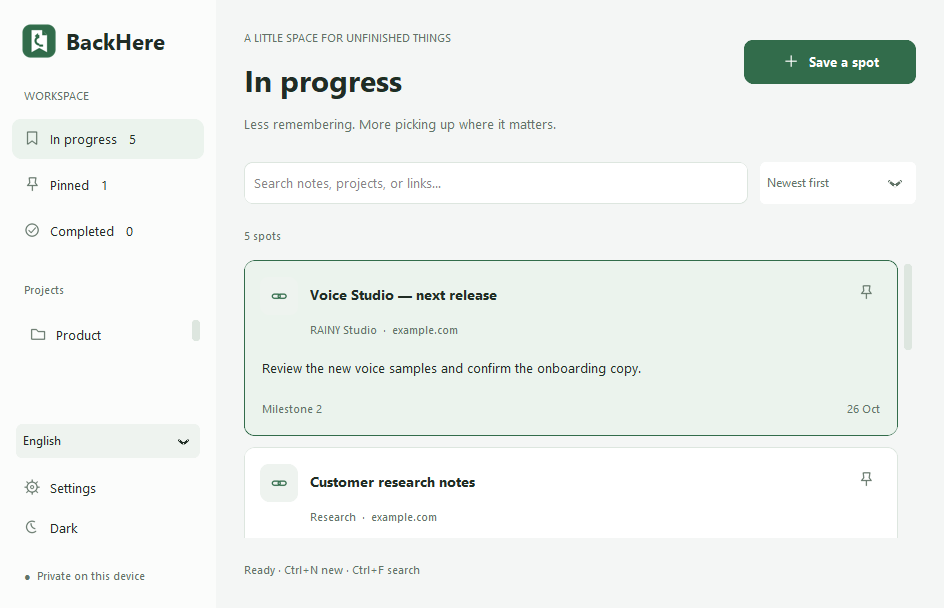

A SMALL APP. A CLEARER HEAD.
Pick up exactly
where you left off.
Your file. Your page. Your next step. Leave yourself a little bookmark, and get back into the flow without starting over.
Windows 10 / 11 · x64 & x86 · No account needed
NEXT STEPCheck column 3.
Then pick up here.
↶ BackHere− ▢ ×

THE ACTUAL WINDOWS APP
↶Welcome back.Your place is saved.
✓ FOR THE WORK BETWEEN THE WORK.
A bookmark for your attention.
Switching projects is easy. Remembering what you were about to do is the hard part. BackHere keeps that little piece for you.
01 /↗Q4 roadmap.xlsxProduct / Roadmap!C12
Excel NEXT STEPCheck the dates in column C, then share the final timeline.
Save the next step, not just the link.
Keep a file or URL together with a short note, a project and the exact place you want to remember.
02 /Ctrl+Alt+B
Catch the thought while it’s there.
Bring up BackHere from another window. Capture supported addresses automatically, or choose your file manually.
03 /A private corner of your desktop.
Your notes stay in your Windows profile. No account, no cloud sync and no app analytics. Export a backup whenever you need it.
A SMALL RITUAL. A BETTER RESTART.
Leave a thought.
Find your flow.
- 1
Save your spot
Press Ctrl+Alt+B while BackHere is running. Add your file or page.
- 2
Tell your future self
Write one clear sentence about what to do next. A page or cell reference is enough.
- 3
Come back, carry on
Open the bookmark to return to the file or page. Mark it complete when you’re done.
Actual app screenshots. Notes shown are illustrative examples.
THOUGHTFULLY SMALL.
Just what you need.
Room to think.
⌕Find it quickly
Search notes, links and projects. Pin what matters. Keep finished work out of the way.
◐Make it feel like home
Light, dark or system theme. Twelve interface languages. A layout that fits your window.
↶Keep a way back
Daily recovery snapshots, JSON export and import. Your data remains after uninstalling.
v0.4.0 PUBLIC RELEASEGive your next step a home.
A native Windows app, ready for your desktop.
Choose the build that matches your system.
Not sure? Windows Settings → System → About → System type.
Publisher signing is not included in this release. Windows may show an unknown-publisher warning. No Python or administrator account is required to install.
THE LITTLE DETAILS.
Good questions.
Simple tools deserve clear answers.
Does BackHere open a file at the exact cell or page?
It opens the file in its default app. Page, cell and scroll references are reminders; exact native document restoration is not included. Numeric page references can be added to web PDF URLs when the viewer supports them.
Where are my notes stored?
In your Windows user profile, under %LOCALAPPDATA%\BackHere. Notes and exported backups are not encrypted. The app does not upload them. Keep a copy on another drive if you want protection from device failure.
Which apps can it capture from?
It attempts to capture Explorer selections, supported browser address bars, and matching Word/Excel COM windows. Support varies by version and permissions. You can always choose a file or enter a URL yourself.
Does the shortcut work when I close the window?
Yes, when “Keep running in the system tray” is enabled and BackHere is still running. Fully exiting stops the shortcut. Windows startup and the shortcut combination are configurable.
What has been tested?
Both builds pass Windows API, UI, theme, packaged executable, installer and uninstall checks in CI. The 32-bit executable is tested using WOW64 on 64-bit Windows; separate real 32-bit device testing remains necessary. Windows 7/8 are not supported.
Where can I get help or report a problem?
Use the GitHub support page. Include your app version, Windows version and a short description. Never include passwords or private files. Open support ↗